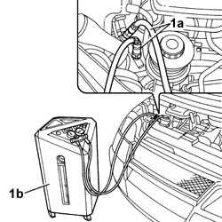

0010T84 COOLANT FOR AIR CONDITIONING SYSTEM DEHYDRATE AND RECHARGE
- Path
- Procedures > 00 MAINTENANCE > 0010 NEW VEHICLES AND MAINTENANCE > 0010T VEHICLE FLUIDS > 0010T84 COOLANT FOR AIR CONDITIONING SYSTEM DEHYDRATE AND RECHARGE
- Kind
- repair procedure (removal / refitting; the operation number is the code)
- Applies to
- all engines; all production periods
- Interactive page
- https://sloeber94.github.io/elrnDB-fUlss/en/#/179006828
Applies to: all engines; all production periods
Applies to: all engines; all production periods
- Let the engine run with the air conditioning on for 10 - 15 minutes.
- Switch off the engine.
1. Connect the pressurizing and draining pipes (1a) for the drainage equipment (1b) to the valves on the air conditioning system high pressure and low pressure pipes.

Applies to: all engines; all production periods
- Start the procedure for draining the refrigerant fluid, following the instructions in the equipment manual.
- Whilst draining the system the compressor fluid that comes out collects in a special container.
- Refill the system with exactly the same amount of fluid indicated on the container.
- If some of the components are being replaced, the following amount of oil must be added for each of the replaced components:
- Drier filter: 15 cm3
- Pipes: 5 cm3/m
- Evaporator: 40 cm3
- Condenser: 40 cm3
- If there are accidental breaks that cause the "rapid" draining of the system (in less than 5 minutes) then the exact amount of fluid that comes out cannot be determined because the high pressure may cause seepage. Integrare con una quantità indicativa di olio di 75 cm³.
- Start the procedure for repressurizing the refrigerant fluid, following the instructions in the equipment manual.
- Add the recommended quantity of coolant
- In the case of damage to the compressor or other system components or following prolonged exposure of the pipes to the air (more than 6 hours) the WASHING procedure must be carried out as follows.
- Clean the pipes connected to the compressor using a jet of air.
- Connect the (drained) system to the repressurizing equipment.
- Introduce the recommended quantity of refrigerant fluid at the high pressure side.
- Collect the refrigerant fluid at the low pressure side.
- Repeat the introduction and collection of fluid.
- Proceed with draining and repressurizing the system as illustrated previously.
- Refill the system with the recommended amount of fluid
Topics that link to this page (20)
- 1004B10 POWER UNIT WITH MANUAL GEARBOX - R.R
- 1004B14 POWER UNIT WITH AUTOMATIC TRANSMISSION R + R
- 1020D38 FLYWHEEL SIDE OIL SEAL - REPLACE
- 1024B10 ENGINE FLYWHEEL - R + R FOR VERSIONS WITH MANUAL GEARBOX
- 2110A10 MANUAL GEARBOX AND DIFFERENTIAL - R + R
- 2130A10 AUTOMATIC TRANSMISSION - R + R
- 2130B12 AUTOMATIC TRANSMISSION TORQUE CONVERTER - R+R
- 5010B39 FRONT CONNECTION FOR CENTRAL AIR DUCT TO REAR SEATS - R R
- 5010B45 DUCT FROM CLIMATE CONTROL SYSTEM - R R
- 5040A20 AIR CONDITIONER COMPRESSOR - R+R - INCLUDES FLUID LEVEL CHECK AND TOP UP IF NECESSARY
- 5040A25 COMPRESSOR BRACKET - R R
- 5040A40 AIR CONDITIONER CONDENSER - R+R
- 5040A44 AIR CONDITIONER DEHYDRATING FILTER/ACCUMULATOR - R+R
- 5040A54 PIPE FROM DEHYDRATING FILTER TO EXPANSION VALVE - R+R
- 5040B30 EXPANSION VALVE (TUBE ORIFICE) - R+R
- 5040C13 AIR CONDITIONER HEATER/DISTRIBUTOR ASSEMBLY - R R
- 5040C50 AIR CONDITIONING HEATER RADIATOR - R.R.
- 5040C64 A/C MANUAL CONTROL SWITCH (ONE) - R+R
- 5040D90 AIR CONDITIONER SYSTEM WIRING BUNDLE - R R
- 7040L17 PASSENGER COMPARTMENT FLOOR FRONT CARPET - R R